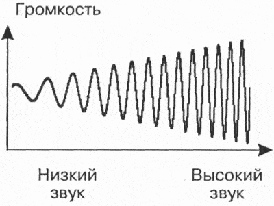
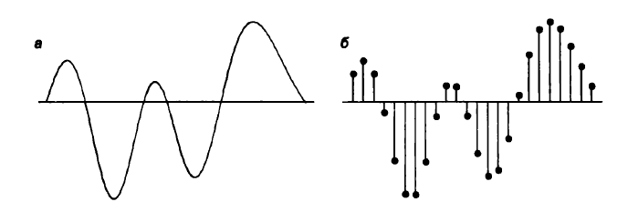
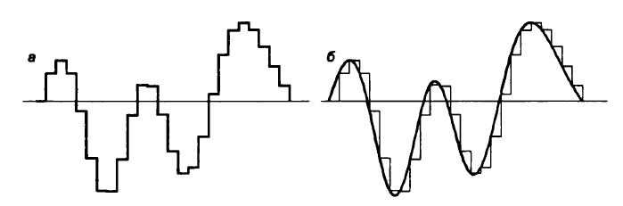

Кодирование информации

Кодирование звука
Звук представляет собой непрерывный сигнал — звуковую волну с меняющейся амплитудой и частотой.
Чем больше амплитуда сигнала, тем он громче для человека.
Чем больше частота сигнала, тем выше тон.
Частота звуковой волны выражается числом колебаний в секунду и измеряется в герцах (Гц, Hz).
Человеческое ухо способно воспринимать звуки в диапазоне от 20 Гц до 20 кГц, который называют звуковым.
Количество бит, отводимое на один звуковой сигнал, называют глубиной кодирования звука.
Современные звуковые карты обеспечивают 16-, 32- или 64-битную глубину кодирования звука.
При кодировании звуковой информации непрерывный сигнал заменяется дискретным, то есть превращается в последовательность электрических импульсов (двоичных нулей и единиц).
Процесс перевода звуковых сигналов от непрерывной формы представления к дискретной, цифровой форме называют оцифровкой.
Важной характеристикой при кодировании звука является частота дискретизации — количество измерений уровней сигнала за 1 секунду:
- 1 (одно) измерение в секунду соответствует частоте 1 Гц;
- 1000 измерений в секунду соответствует частоте 1 кГц.
Частота дискретизации звука — это количество измерений громкости звука за одну секунду.
Количество измерений может лежать в диапазоне от 8 кГц до 48 кГц (от частоты радиотрансляции до частоты, соответствующей качеству звучания музыкальных носителей).
Чем больше частота и глубина дискретизации звука, тем более качественным будет звучание оцифрованного звука. Самое низкое качество оцифрованного звука, соответствующее качеству телефонной связи, получается при частоте дискретизации 8000 раз в секунду, глубине дискретизации 8 битов и записи одной звуковой дорожки (режим «моно»). Самое высокое качество оцифрованного звука, соответствующее качеству аудио-CD, достигается при частоте дискретизации 48000 раз в секунду, глубине дискретизации 16 битов и записи двух звуковых дорожек (режим «стерео»).
Необходимо помнить, что чем выше качество цифрового звука, тем больше информационный объем звукового файла.
Оценить информационный объём моноаудиофайла (V) можно следующим образом: V = N⋅f⋅k, где N — общая длительность звучания (секунд), f — частота дискретизации (Гц), k — глубина кодирования (бит).
Например, при длительности звучания 1 минуту и среднем качестве звука (16 бит, 24 кГц):
V = 60⋅24000⋅16 бит = 23040000 бит = 2880000 байт = 2812,5 Кбайт = 2,75 Мбайт.
При кодировании стереозвука процесс дискретизации производится отдельно и независимо для левого и правого каналов, что, соответственно, увеличивает объём звукового файла в два раза по сравнению с монозвуком.
Например, оценим информационный объём цифрового стереозвукового файла длительностью звучания 1 секунда при среднем качестве звука (16 битов, 24000 измерений в секунду). Для этого глубину кодирования необходимо умножить на количество измерений в 1 секунду и умножить на 2 (стереозвук):
V=16 бит ⋅24000⋅2 = 768000 бит = 96000 байт = 93,75 Кбайт.
Существуют различные методы кодирования звуковой информации двоичным кодом, среди которых можно выделить два основных направления: метод FM и метод Wave-Table.
Метод FM (Frequency Modulation) основан на том, что теоретически любой сложный звук можно разложить на последовательность простейших гармонических сигналов разных частот, каждый из которых представляет собой правильную синусоиду, и, следовательно, может быть описан кодом. Разложение звуковых сигналов в гармонические ряды и представление в виде дискретных цифровых сигналов выполняют специальные устройства — аналогово-цифровые преобразователи (АЦП).
Преобразование звукового сигнала в дискретный сигнал: a — звуковой сигнал на входе АЦП; б — дискретный сигнал на выходе АЦП.
Обратное преобразование для воспроизведения звука, закодированного числовым кодом, выполняют цифро-аналоговые преобразователи (ЦАП). Процесс преобразования звука представлен на рис. ниже. Данный метод кодирования не даёт хорошего качества звучания, но обеспечивает компактный код.
Преобразование дискретного сигнала в звуковой сигнал: а — дискретный сигнал на входе ЦАП; б — звуковой сигнал на выходе ЦАП.
Таблично-волновой метод (Wave-Table) основан на том, что в заранее подготовленных таблицах хранятся образцы звуков окружающего мира, музыкальных инструментов и т. д. Числовые коды выражают высоту тона, продолжительность и интенсивность звука и прочие параметры, характеризующие особенности звука. Поскольку в качестве образцов используются «реальные» звуки, качество звука, полученного в результате синтеза, получается очень высоким и приближается к качеству звучания реальных музыкальных инструментов.
Звуковые файлы имеют несколько форматов. Наиболее популярные из них MIDI, WAV, МРЗ.
Формат MIDI (Musical Instrument Digital Interface) изначально был предназначен для управления музыкальными инструментами. В настоящее время используется в области электронных музыкальных инструментов и компьютерных модулей синтеза.
Формат аудиофайла WAV (waveform) представляет произвольный звук в виде цифрового представления исходного звукового колебания или звуковой волны. Все стандартные звуки Windows имеют расширение WAV.
Формат МРЗ (MPEG-1 Audio Layer 3) — один из цифровых форматов хранения звуковой информации. Он обеспечивает более высокое качество кодирования.